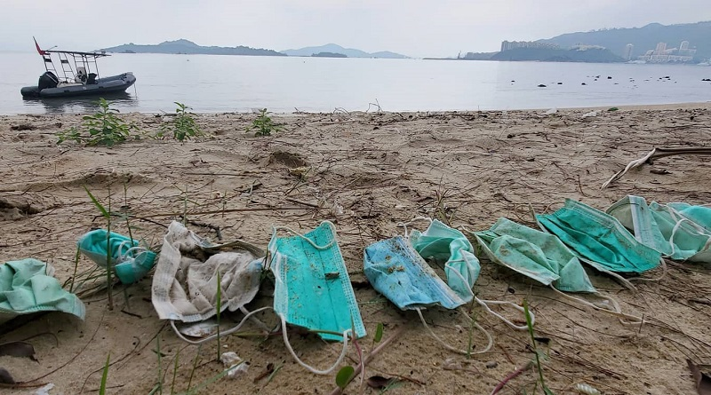

Dicas de como aplicar a sustentabilidade para reduzir impactos do COVID-19 Pensando na importância da sustentabilidade para reduzir os impactos negativos do COVID-19 no meio ambiente, preparamos seis dicas simples para você aplicar na sua empresa. São elas:
Máscara no mar.
Máscaras na praia.